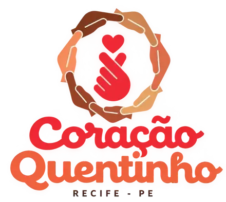
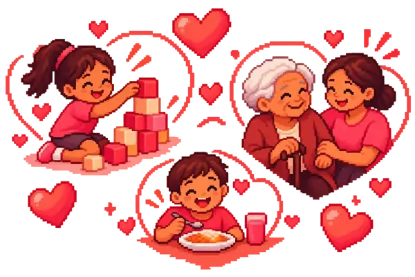
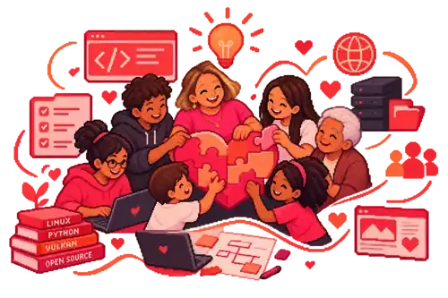
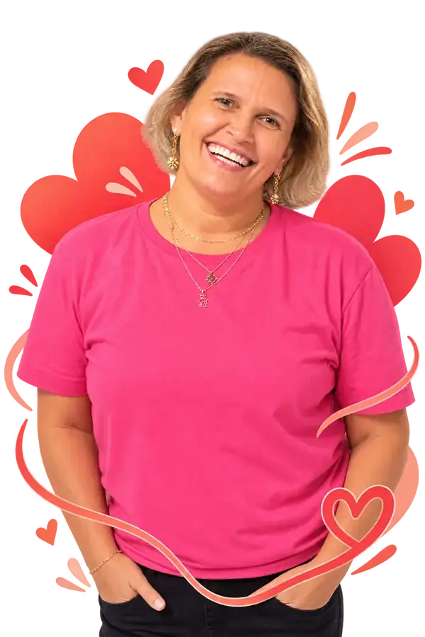
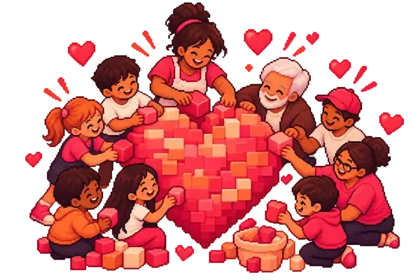

Pilar Um
Acolhimento e cuidado com cada história.

Promovemos inclusão, acolhimento e qualidade de vida para quem precisa. Descrição genérica da sua causa, missão e impacto.

Acolhimento e cuidado com cada história.
Solidariedade que transforma em esperança.
Educação que abre novos horizontes.
Comunidade unida em torno da causa.
A ONG é dedicada à sua causa, oferecendo apoio, orientação e oportunidades para que cada indivíduo possa desenvolver seu potencial e viver com mais autonomia, bem-estar e dignidade.
Saiba maisAções que geram oportunidades e promovem impacto de verdade.

Entrega de refeições prontas com acolhimento e escuta afetiva.
Distribuição de alimentos às comunidades locais e adjacentes.
Aulas de artesanato para meninas, incentivando o empreendedorismo.
Estudos sobre desenvolvimento socioemocional infantil com o livro "Eu Lidero".
Momentos que capturam nossa essência. Siga-nos no Instagram @ongcoracaoquentinhorecife

A ONG é guiada por uma diretoria apaixonada e comprometida, liderada pela nossa fundadora, que dedica a vida a construir um mundo mais acolhedor para a nossa causa. Com transparência, escuta ativa e amor no que faz, cuidamos para que cada projeto saia do papel e transforme vidas de verdade.
Cada projeto, cada conquista e cada vida transformada existem porque há gente que doa o seu tempo e o seu coração. Às famílias, aos amigos e a cada pessoa que sustenta a nossa ONG: essa vitória é de todos vocês.

Faça uma doação de qualquer valor.
Cada contribuição, do tamanho que você puder, ajuda a transformar vidas. 💚
Não existe um jeito único de ajudar — existe o seu. Veja as formas de contribuir:
Contribuições financeiras mantêm os projetos e o dia a dia da ONG. Todo valor vira impacto concreto para quem precisa.
Profissional ou amador, seu talento tem lugar aqui:
Participando das atividades, ajudando na logística ou acompanhando os encontros — sua presença já é apoio.
Acreditar que juntos somos mais fortes é o nosso ponto de partida. Este pilar sustenta o acolhimento de cada pessoa que chega até nós, oferecendo escuta, afeto e caminhos concretos para recomeçar. Aqui, ninguém fica para trás: cada história é ouvida com respeito e cada passo, por menor que seja, é celebrado.
O coração é o que move a nossa causa. Este pilar representa a solidariedade em prática: gestos simples que chegam longe, doações que viram esperança e laços que se transformam em cuidado. Acreditamos que, com presença e generosidade, conseguimos aquecer quem mais precisa.
Transformar realidades passa pela educação e pelo conhecimento. Este pilar investe em qualificação, informação e oportunidades de aprendizado, para que cada pessoa descubra e desenvolva o seu próprio potencial. Quando o saber chega, o mundo se abre — e todos crescemos juntos.
Comunidade é quando as mãos se juntam. Este pilar fortalece os vínculos entre as pessoas, promove o espírito de equipe e valoriza cada voluntário que dedica seu tempo e seu talento. Juntos, construímos uma rede de apoio que abraça a cidade e transforma vidas de verdade.